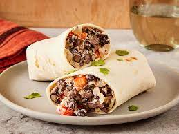

Ingredients Required for making a Burrito:
- 1 lb lean ground beef
- 1 ounce packet seasoning mix
- 3/4 cup corn kernels
- 3 cups cooked rice
- 6 large flour tortillas
- 1 1/2 cups refried beans

Ingredients Required for making a Burrito:
Preheat oven to 350 degree F. Spray 9 x 13-inch baking dish with cooking spray and set aside.
Cook beef with taco seasoning mix, according to seasoning package instructions.
To prepare 1 burrito: spread 1/4 cup beans down center of tortillas; top with 1/2 cup rice, beef, 2tablespoons corn, and 1/4 cup cheese.
Fold in opposite sides of each tortilla, then roll up burrito style. Place, seam-sides down, in prepared dish. Repeat with remaining ingredients to prepare 6 total burritos.
Cover with foil and bake for 25 minutes. if you are baking the burritos from the refrigerator while theyr'e still cold, it will take about 30-35 minutes for them to heat through.
Don't forget to share the burritos with your friends.
